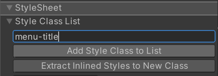

Style UI with UI Builder
In UI Builder, you can style an element with inline styles or USS selectors. Inline styles are typically used for single-use or experimental purposes, whereas managing styles through style sheets tends to be easier and more efficient. You can extract inline styles to a USS class. You can also manage style sheets and USS selectors in UI Builder.
Set inline styles to elements
You can set inline styles to elements in the Inlined Styles section in the element’s Inspector window.
Style fields that appear bold with a solid line on the left of the field label represent style properties that are already set or overridden. It’s important to keep track of these overridden style properties, as they always override the same property coming from a StyleSheet or from a C# default. To unset or remove the override for a style property, right-click on the style field and select Unset.
Note: You can’t use inline style to style pseudo-classes or read-only elements.
Manage a style sheet
To add a style sheet, use the + dropdown menu and select one of the following options:
- Create New USS: This opens a Save File Dialog to create a new style sheet in your project.
- Add Existing USS: This opens the Open File Dialog to add an existing style sheet to the UI Document.
To remove a style sheet from the active UI Document, right-click on the style sheet and select Remove USS.
To make a style sheet active, right-click on a style sheet and select Set as Active USS. An Active StyleSheet appears bold.
When you edit sub-documents, the style sheets that belong to parent documents appear dimmed and are read-only.
Note: You can add comments in a USS file with a text editor the same way as you do with a CSS file. However, if you open the USS file in the UI Builder, the comments are removed as soon as you save the USS file from the UI Builder.
Create USS selectors
You can create any new USS selectors in the StyleSheets window. You can also create a new class selector in the StyleSheets section in the Inspector window. A new selector is always added to the Active StyleSheet.
To create a new selector in the StyleSheets window:
-
In the StyleSheets window, click in the Add new selector… field. This opens a USS selector syntax reference window on top of the Viewport as shown in the image below:

USS Selector cheatsheet Enter the selector with the correct syntax. For example, a class selector should start with
..Press the Enter key.
In the StyleSheets window, select the newly-created selector.
In the selector’s Inspector window, set the desired styles for the selector.
To create a new class selector in an element’s Inspector window:
In the Hierarchy window, select the element.
In the Inspector window, enter the class selector in the Style Class List text field.
-
Select Add Style Class to List. A yellow-style class label appears in Style Class List.

StyleSheet section of Inspector If the yellow-style class label appears faded, it means the selector doesn’t exist in the attached StyleSheets. You can double-click on it to create a new class selector. If the class selector exists, you can double-click on it to open the selector’s Inspector window.
Manipulate USS selectors
To copy, paste, duplicate, rename, or delete one or more USS selectors:
- In the StyleSheets window, select the group.
- Right-click the group and select the desired action.
Tip: You can copy and paste a USS selector between the UI Builder’s StyleSheets window and a text editor.
Match USS style class to elements
You can match USS classes to elements. For example, if you have the following USS style:
To match USS style class to elements, do any of the following:
- Drag a style class label, like
 , onto the element in either the Hierarchy or the Canvas.
, onto the element in either the Hierarchy or the Canvas. - Enter the name of the selector into the StyleSheet > Style Class List field in the element’s Inspector window and then select Add Style Class to List:
